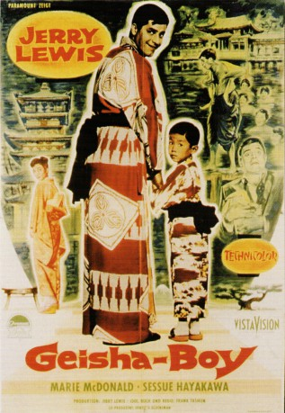
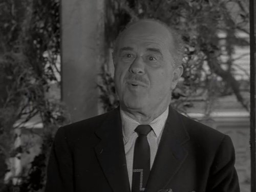

#10202 Geisha Boy
Alternativ: The Geisha Boy (Englischer Titel)
 
 IMDB-Wertung: 6.5 / 10
IMDB-Wertung: 6.5 / 10  Metascore: 0
Metascore: 0 
Der etwas glücklose Zauberkünstler Gilbert Wooley soll zur Unterhaltung der amerikanischen Truppen in Japan auftreten. Allerdings lernt er auf dem Weg dorthin ein Waisenkind kennen. Der Junge mag Gilbert sehr und hängt sich an ihn, für Gilbert - der bisher gerade mal mit sich alleine zurecht kam - eine ganz neue Situation ...
Jahr: 1958
Dauer: 97 Minuten
FSK: 6
Land: USA Studio: Paramount PicturesTonspuren:
Untertitel:
Auflösung: 720p (1280x720) Größe: 3491 MB
Genre: Komödie
Regisseur: Frank Tashlin
Drehbuch: Frank Tashlin, Frank Tashlin, Rudy Makoul
Soundtrack: Walter Scharf
Darsteller:
 Jerry Lewis als Gilbert Wooley
Jerry Lewis als Gilbert Wooley- Marie McDonald als Lola Livingston
- Sessue Hayakawa als Mr. Sikita
 Barton MacLane als Maj. Ridgley
Barton MacLane als Maj. Ridgley Suzanne Pleshette als Sgt. Pearson
Suzanne Pleshette als Sgt. Pearson- Nobu McCarthy als Kimi Sikita
 Murray Alper als GI in Korea (uncredited)
Murray Alper als GI in Korea (uncredited) Douglas Fowley als GI in Korea (uncredited)
Douglas Fowley als GI in Korea (uncredited)-  Alex Gerry als Colonel Adams (uncredited)
 Alec Guinness als Himself (archive footage) (uncredited)
Alec Guinness als Himself (archive footage) (uncredited) Bob Hope als Himself (on TV) (archive footage) (uncredited)
Bob Hope als Himself (on TV) (archive footage) (uncredited)- Sid Melton als Taxi Driver (uncredited)
- Teru Shimada als Osakawa, Japanese Detective (uncredited)
- Dick Whittinghill als Reporter (uncredited)
 Dave Willock als GI in Korea (uncredited)
Dave Willock als GI in Korea (uncredited)- Robert Hirano als Mitsuo Watanabe
- Ryuzo Demura als Ichiyama
- The Los Angeles Dodgers als Themselves
- Carl Erskine als Himself
- Tsunagorô Rashômon als Baseball player
- Walter Alston als Los Angeles Dodgers Manager (uncredited)
- Brad Brown als Military Policeman (uncredited)
- Stanley Cha als Japanese Sportswriter (uncredited)
- Gino Cimoli als Los Angeles Dodgers left fielder (uncredited)
- Carl Furillo als Los Angeles Dodgers right fielder (uncredited)
- Jim Gilliam als Los Angeles Dodgers second baseman (uncredited)
- Gil Hodges als Los Angeles Dodgers First Baseman (uncredited)
- Mike Mahoney als Guard at Lockheed Air Terminal (uncredited)
- Lane Nakano als Japanese Gardener (uncredited)
- Charlie Neal als Los Angeles Dodgers third baseman (uncredited)
- Pee Wee Reese als Los Angeles Dodgers shortstop (uncredited)
- John Roseboro als Los Angeles Dodgers Catcher (uncredited)
 Michael Ross als Air Force Sergeant, MATS Desk Clerk (uncredited)
Michael Ross als Air Force Sergeant, MATS Desk Clerk (uncredited)- Duke Snider als Los Angeles Dodgers center fielder (uncredited)
Datei: X:\Person\Jerry Lewis\Geisha Boy (1958, FSK6, 1280x720).mkv seit 18.12.2018
Festplatte: HD Collection-7+mehr(A-Z)+Person
 Es gibt insgesamt 7 Filme in der Gruppe 'Person\Jerry Lewis'
Es gibt insgesamt 7 Filme in der Gruppe 'Person\Jerry Lewis'